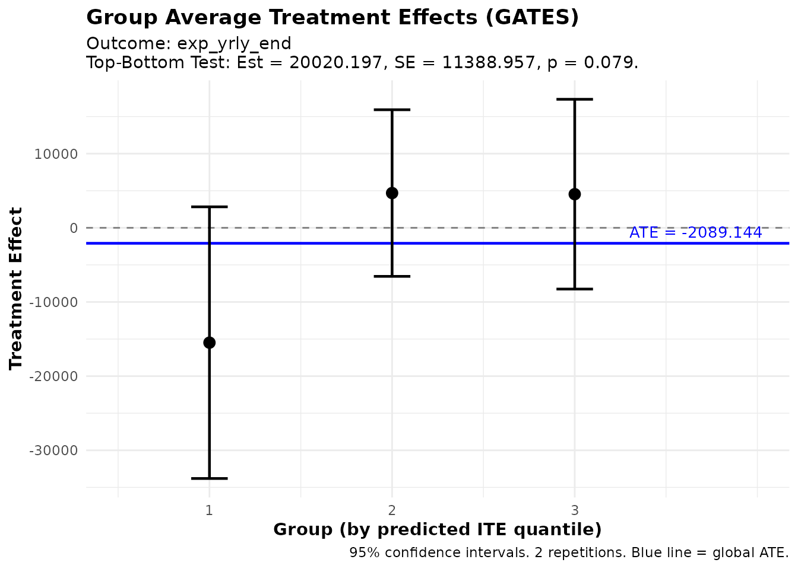
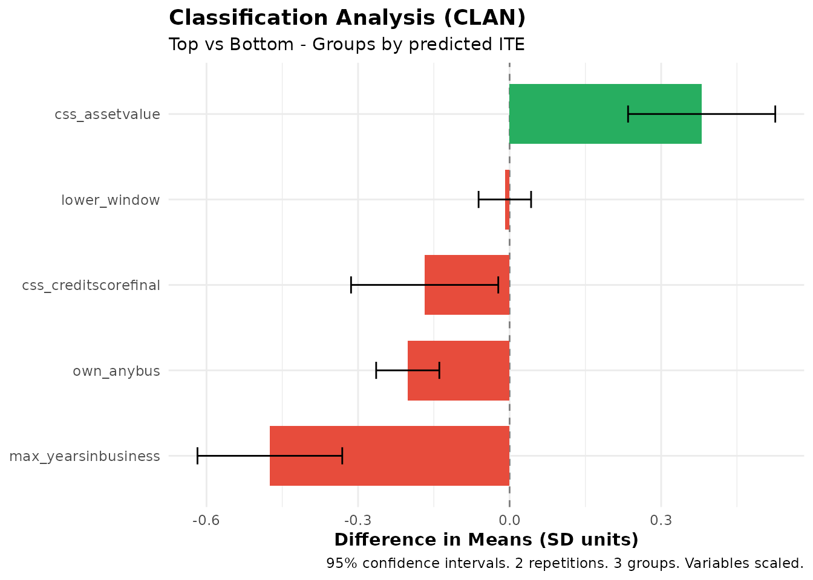
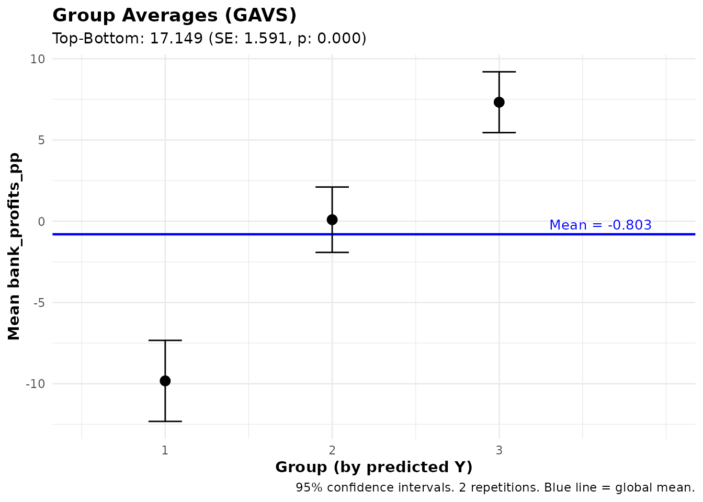
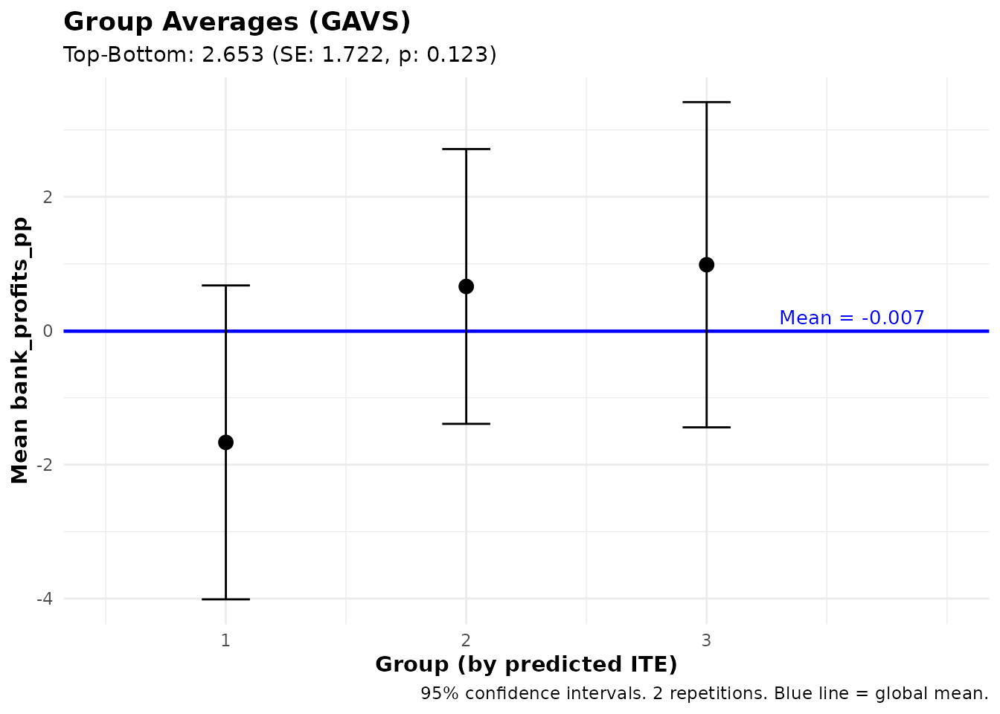
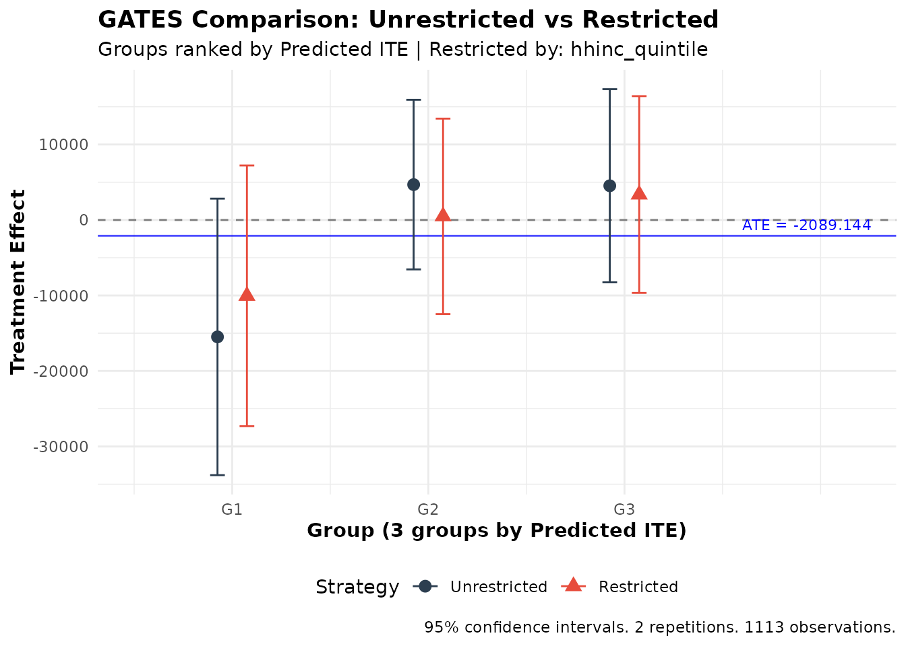
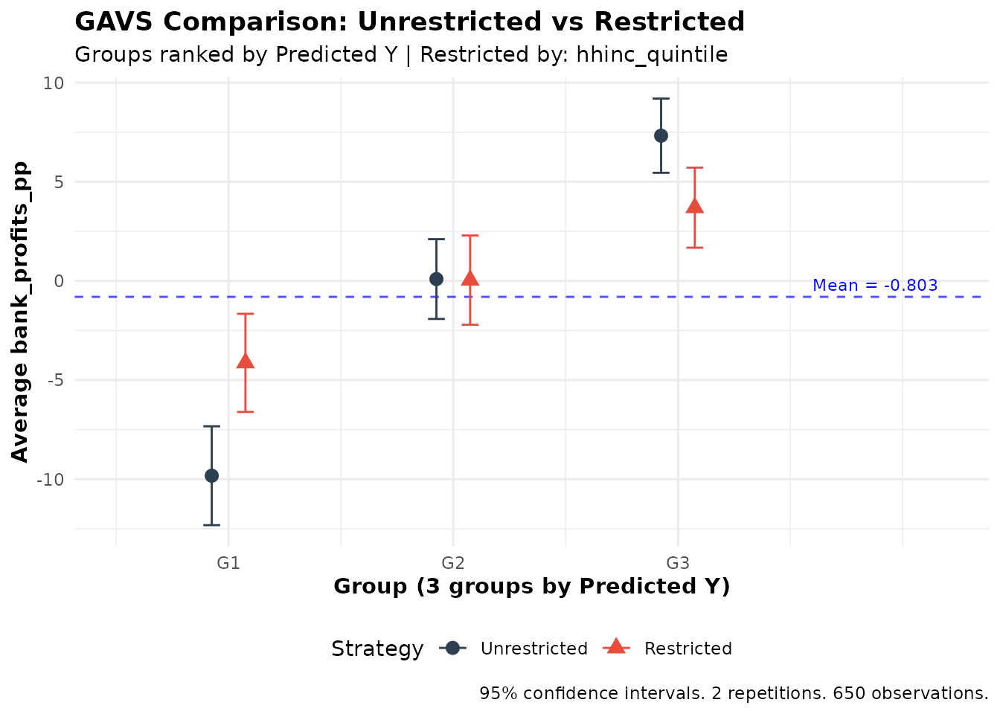

Complete Guide to ensembleHTE
Bruno Fava
2026-03-06
Source:vignettes/ensembleHTE-complete-guide.Rmd
ensembleHTE-complete-guide.RmdIntroduction
Overview
The ensembleHTE package provides a comprehensive
framework for learning features of heterogeneous treatment effects
(HTEs) in randomized controlled trials (RCTs) using ensemble machine
learning methods. The package implements the estimation strategy
developed in Fava (2025), which combines predictions from multiple
machine learning algorithms using Best Linear Predictor (BLP) weights
and repeated K-fold cross-fitting to improve statistical power.
The key innovations over existing methods are using the entire sample for final inference rather than holding out data for validation, and combining multiple machine learning algorithms to improve predictive performance.
When to Use This Package
This package is designed for researchers and practitioners who want to:
- Detect treatment effect heterogeneity: Test whether a treatment affects different individuals differently based on their observable characteristics
- Characterize beneficiaries: Identify characteristics of groups of individuals that benefit more (or less) from a treatment
- Validate predictions: Test whether machine learning predictions have genuine out-of-sample predictive power
- Predict outcomes: Use ensemble ML for standard prediction tasks without treatment
- Compare targeting strategies: Evaluate whether unrestricted targeting (rank everyone) outperforms constrained targeting (rank within subgroups)
Key Concepts
Heterogeneous Treatment Effects (HTE)
In randomized controlled trials (RCTs), the Average Treatment Effect (ATE) measures the mean effect of treatment across the population:
where and are the potential outcomes for individual under treatment and control, respectively.
However, treatment effects often vary across individuals. The Conditional Average Treatment Effect (CATE) captures this heterogeneity:
where represents individual characteristics (covariates).
Group Average Treatment Effects (GATES)
GATES (Chernozhukov et al., 2025) provides a structured way to test for and visualize treatment effect heterogeneity by:
- Using machine learning to predict individual treatment effects based on covariates
- Sorting individuals into quantile groups (e.g., terciles) based on these predictions
- Estimating the average treatment effect within each group
- Testing whether high-prediction and low-prediction groups have statistically different effects
The Ensemble Approach
This package improves upon existing single-algorithm approaches by:
- Combining Multiple ML Algorithms: Uses several algorithms (e.g., random forests, gradient boosting, elastic net) and optimally combines their predictions using BLP weights
- K-fold Cross-Fitting: Trains models on K-1 folds and generates predictions on the held-out fold
- Full-Sample Inference: Uses the entire dataset for final estimation, maximizing statistical power
- Repeated Sample-Splitting: Averages across M repetitions for stability and valid inference. Important: For debugging and exploration, use M = 2 or 3 to quickly verify your code works. For final results and publication, use M ≥ 100 at least (use more if you can!). The tests conducted with the methodology and recommended usage require M ≥ 100.
Installation
Install the development version from GitHub:
# install.packages("devtools")
devtools::install_github("bfava/ensembleHTE")The package requires R ≥ 4.0.0 and depends on several packages
including grf, mlr3, data.table,
and ggplot2. These will be installed automatically.
For additional ML algorithms, you may want to install optional packages:
install.packages(c("glmnet", "gbm", "ranger"))It is recommended to frequently check for package updates:
Basic Workflow
Loading the Data
Throughout this vignette, we use the microcredit dataset
that ships with the package. It contains data from a randomized
microfinance experiment in the Philippines where microloans were
randomly offered to applicants. For a gentler, application-oriented
introduction to the package using this same dataset, see the companion
article Introduction
to ensembleHTE. That article walks through a practical analysis step
by step, while the present guide provides comprehensive coverage of
every feature and option available in the package.
library(ensembleHTE)
data(microcredit)
dim(microcredit)
#> [1] 1113 51
head(microcredit[, c("treat", "prop_score", "exp_yrly_end", "hhinc_yrly_end")])
#> treat prop_score exp_yrly_end hhinc_yrly_end
#> 1 1 0.8434874 29475 15750
#> 2 1 0.5465839 11760 66990
#> 3 1 0.8434874 1800 9450
#> 4 1 0.8434874 975 29025
#> 5 1 0.8434874 9000 3750
#> 6 1 0.8434874 0 0
# Variables used throughout this guide
hte_covars <- c("css_creditscorefinal", "lower_window", "own_anybus",
"max_yearsinbusiness", "css_assetvalue")
profit_covars <- c("css_creditscorefinal", "own_anybus", "css_assetvalue",
"age", "gender", "hhinc_yrly_base")
has_loan <- microcredit$treat == 1 & microcredit$loan_size > 0
# Income quintiles (used for restricted comparisons later)
microcredit$hhinc_quintile <- cut(
microcredit$hhinc_yrly_base,
breaks = quantile(microcredit$hhinc_yrly_base, probs = seq(0, 1, by = 0.2)),
labels = paste0("Q", 1:5),
include.lowest = TRUE
)Key variables:
-
treat: treatment indicator (1 = loan offered) -
prop_score: known propensity score (varies by credit-score window) -
exp_yrly_end: yearly business expenses at endline (pesos) -
hhinc_yrly_end: yearly household income at endline (pesos) -
bank_profits_pp: bank profit per peso lent (only observed for borrowers)
Fitting an Ensemble HTE Model
The main function for HTE estimation is
ensemble_hte():
# Fit ensemble HTE model
# Start with M = 2 for quick debugging, then increase to M >= 100 for final results
fit <- ensemble_hte(
Y = "exp_yrly_end",
D = "treat",
X = hte_covars,
data = microcredit,
prop_score = "prop_score",
algorithms = c("lm", "grf"), # Linear model + causal forest
M = 2, # Use M = 2-3 for debugging, M >= 100 for final results
K = 3 # 3-fold cross-fitting
)
# View basic information
print(fit)#> Ensemble HTE Fit
#> ================
#>
#> Call:
#> ensemble_hte(data = microcredit, Y = "exp_yrly_end", X = hte_covars,
#> D = "treat", prop_score = "prop_score", M = 2, K = 3, algorithms = c("lm",
#> "grf"))
#>
#> Data:
#> Observations: 1113
#> Targeted outcome: exp_yrly_end
#> Treatment: treat
#> Covariates: 5
#>
#> Model specification:
#> Algorithms: lm, grf
#> Metalearner: R-learner
#> Task type: regression (continuous outcome)
#> R-learner method: grf
#>
#> Split-sample parameters:
#> Repetitions (M): 2
#> Folds (K): 3
#> Ensemble strategy: cross-validated BLP
#> Ensemble folds: 5
#> Covariate scaling: enabled
#> Hyperparameter tuning: disabledThe print() method shows:
- Data dimensions and specification
- Algorithms used in the ensemble
- Metalearner strategy (R-learner by default)
- Split-sample parameters (M repetitions, K folds)
For more detailed output:
summary(fit)
#> Ensemble HTE Summary
#> ====================
#>
#> Call:
#> ensemble_hte(data = microcredit, Y = "exp_yrly_end", X = hte_covars,
#> D = "treat", prop_score = "prop_score", M = 2, K = 3, algorithms = c("lm",
#> "grf"))
#>
#> Outcome: exp_yrly_end
#> Treatment: treat
#> Observations: 1113
#> Repetitions: 2
#>
#> Best Linear Predictor (BLP):
#> beta1 (ATE): -2244.44 (SE: 4317.52, p: 0.603)
#> beta2 (HET): 0.65 (SE: 0.35, p: 0.064) .
#> -> No significant heterogeneity detected (p >= 0.05)
#>
#> Group Average Treatment Effects (GATES) with 3 groups:
#> Group Estimate Std.Error Pr(>|t|)
#> --------------------------------------------
#> 1 -15486.55 9344.43 0.097 .
#> 2 4685.47 5731.44 0.414
#> 3 4533.65 6527.62 0.487
#>
#> Top - Bottom: 20020.20 (SE: 11388.96, p: 0.079) .
#>
#> ---
#> Signif. codes: 0 '***' 0.001 '**' 0.01 '*' 0.05 '.' 0.1 ' ' 1The summary() method provides a comprehensive overview
including:
- BLP Analysis: Estimates of beta1 (ATE) and beta2 (HET) with standard errors and p-values, plus interpretation of whether significant heterogeneity is detected
- GATES Analysis: Group average treatment effects showing estimates by quantile group, along with key hypothesis tests (Top-Bottom, Top-All)
Extracting Individual Treatment Effect Predictions
The ite() function extracts the matrix of individualized
treatment effect predictions from a fitted HTE model:
# Extract ITE matrix: n observations x M repetitions
ite_matrix <- ite(fit)
dim(ite_matrix)
#> [1] 1113 2Each column corresponds to one repetition of the cross-fitting procedure. For further analysis beyond the package, it is not recommended to average ITE estimates across repetitions, as this would invalidate the inference. Instead, run your analysis separately on each column and then average the results across repetitions.
Analyzing Treatment Effect Heterogeneity
Group Average Treatment Effects (GATES)
The gates() function computes average treatment effects
for groups defined by predicted ITE quantiles:
# Compute GATES with 3 groups (terciles)
gates_results <- gates(fit, n_groups = 3)
print(gates_results)
#> GATES Results
#> =============
#>
#> Fit type: HTE (ensemble_hte)
#> Outcome analyzed: exp_yrly_end
#> Number of groups: 3
#> Repetitions: 2
#>
#> Group Average Treatment Effects:
#>
#> Group Estimate Std.Error t value Pr(>|t|)
#> ----------------------------------------------------
#> 1 -15486.55 9344.43 -1.66 0.097 .
#> 2 4685.47 5731.44 0.82 0.414
#> 3 4533.65 6527.62 0.69 0.487
#>
#> Heterogeneity Tests:
#> ----------------------------------------------------
#> Test Estimate Std.Error t value Pr(>|t|)
#> ----------------------------------------------------
#> Top-Bottom 20020.20 11388.96 1.76 0.079 .
#> Top-All 6641.05 5701.03 1.16 0.244
#>
#> ---
#> Signif. codes: 0 '***' 0.001 '**' 0.01 '*' 0.05 '.' 0.1 ' ' 1Interpreting GATES Output
The output includes:
Group Estimates:
- Group 1: Bottom tercile (lowest predicted ITEs)
- Group 2: Middle tercile
- Group 3: Top tercile (highest predicted ITEs)
Each group shows the estimated average treatment effect for individuals in that group, along with standard errors, t-statistics, and p-values.
Heterogeneity Tests:
- Top-Bottom: Tests whether the top group has a different average treatment effect than the bottom group. A significant result (p < 0.05) indicates evidence of heterogeneity.
- Top-All: Tests whether the top group differs from the overall average. Useful for comparing targeting strategies focusing on high-benefit individuals versus treating everyone.
Visualizing GATES
plot(gates_results)
GATES estimates showing treatment effect heterogeneity
The plot shows:
- Point estimates for each group with 95% confidence intervals
- Blue line indicating the overall ATE
- Groups ordered from lowest to highest predicted benefit
If the confidence intervals don’t overlap much (especially between groups 1 and 3), this provides visual evidence of heterogeneity.
Best Linear Predictor (BLP)
The blp() function tests whether the ML predictions
capture meaningful heterogeneity:
# Compute BLP
blp_results <- blp(fit)
print(blp_results)
#> BLP Results (Best Linear Predictor of CATE)
#> ============================================
#>
#> Fit type: HTE (ensemble_hte)
#> Outcome analyzed: exp_yrly_end
#> Repetitions: 2
#>
#> Coefficients:
#> beta1 (ATE): Average Treatment Effect
#> beta2 (HET): Heterogeneity loading (significant = ML captures heterogeneity)
#>
#> Term Estimate Std.Error t value Pr(>|t|)
#> ----------------------------------------------------
#> beta1 -2244.44 4317.52 -0.52 0.603
#> beta2 0.65 0.35 1.85 0.064 .
#>
#> ---
#> Signif. codes: 0 '***' 0.001 '**' 0.01 '*' 0.05 '.' 0.1 ' ' 1Interpreting BLP Output
The BLP regression is:
where is the propensity score (probability of treatment), and is the average predicted treatment effect.
Coefficients:
- beta1 (ATE): Estimates the overall average treatment effect.
- beta2 (HET): Tests heterogeneity. A significant beta2 (p < 0.05) indicates that the ML predictions capture genuine treatment effect heterogeneity. If beta2 ≈ 1, the predictions are well-calibrated.
You can also add control variables to the BLP regression using the
controls parameter:
Classification Analysis (CLAN)
The clan() function characterizes which types of
individuals are in the top vs. bottom groups:
# Compute CLAN for all covariates
clan_results <- clan(fit, n_groups = 3)
print(clan_results)
#> CLAN Results (Classification Analysis)
#> =======================================
#>
#> Outcome: exp_yrly_end (treatment effects) | Groups: 3 | Reps: 2
#>
#> Group Means (by predicted ITE):
#> Top Bottom Else All
#> ----------------------------------------------------------------
#> css_creditscorefinal 50.82 51.72 51.57 51.32
#> (0.27) (0.29) (0.20) (0.16)
#> lower_window 0.15 0.16 0.14 0.14
#> (0.02) (0.02) (0.01) (0.01)
#> own_anybus 0.62 0.83 0.79 0.73
#> (0.03) (0.02) (0.02) (0.01)
#> max_yearsinbusiness 5.55 8.17 7.22 6.66
#> (0.24) (0.32) (0.21) (0.17)
#> css_assetvalue 103690.73 41025.27 47169.10 66060.43
#> (9924.53) (6818.40) (5365.29) (4940.35)
#>
#> Differences from Top Group:
#> Top-Bot Top-Else Top-All
#> -----------------------------------------------------------
#> css_creditscorefinal -0.90* -0.75* -0.50*
#> (0.40) (0.34) (0.22)
#> lower_window -0.01 0.01 0.01
#> (0.03) (0.02) (0.01)
#> own_anybus -0.20*** -0.16*** -0.11***
#> (0.03) (0.03) (0.02)
#> max_yearsinbusiness -2.62*** -1.67*** -1.11***
#> (0.40) (0.32) (0.22)
#> css_assetvalue 62665.46*** 56521.63*** 37630.30***
#> (12252.15) (11285.03) (7554.59)
#>
#> ---
#> Signif. codes: 0 '***' 0.001 '**' 0.01 '*' 0.05 '.' 0.1 ' ' 1Interpreting CLAN Output
CLAN compares covariate means between groups. The print output shows two panels:
1. Group Means — Mean (and standard error) of each variable within the Top, Bottom, Else, and All groups.
2. Differences from Top Group — Differences in means (Top − Bottom, Top − Else, Top − All) with significance stars and standard errors in parentheses.
This helps answer questions like: “Do individuals predicted to benefit most from treatment have higher X1 on average?”
Using Analysis Functions with Subsets
All analysis functions (gates(), gavs(),
clan(), gates_restricted(),
gavs_restricted()) accept a subset argument
that restricts which observations are used for the analysis. The
subset can be a logical vector, an integer index vector, or
the string "train" (to use the training subset from
train_idx) or "all". When subset
is specified, only those observations enter the analysis (e.g., CLAN
computes group means only on the subset; GATES runs regressions only on
the subset).
Separately, the group_on argument controls which
observations are used to define the group cutoffs
(i.e., the quantile thresholds that assign individuals to groups). This
is distinct from subset: subset determines
who is analyzed, while group_on determines
whose predictions define where the group boundaries fall.
-
group_on = "auto"(default): Groups are formed using the same population that was used to train the ML model. Ifensemble_hteorensemble_predare fit withouttrain_idx, this means all observations; if they are trained on a subset (viatrain_idx), this means only the training subset. This default ensures that group definitions reflect the population the ML model was designed for. -
group_on = "all": Groups are always formed using all observations, regardless of how the ML was trained or which subset is being analyzed. -
group_on = "analysis": Groups are formed using only the observations in the analysissubset. This means the group boundaries are re-computed within the subset, so individuals may be assigned to different groups than they would be in the full sample.
# Suppose you want to analyze CLAN only for business owners
subset_biz <- microcredit$own_anybus == 1
# Default (auto): group cutoffs come from the ML training population
clan_all <- clan(fit, n_groups = 3, subset = subset_biz)
# Alternative: form groups only within the business-owner subset
clan_reranked <- clan(fit, n_groups = 3, subset = subset_biz,
group_on = "analysis")Visualizing CLAN
plot(clan_results)
CLAN results showing characteristics of top vs bottom groups
The plot shows mean differences with confidence intervals for each variable. Variables with bars that don’t include zero are significantly different between groups.
Prediction Tasks (Without Treatment)
The package also supports standard prediction problems without
treatment effects through ensemble_pred(). This is useful
for:
- Predicting outcomes based on covariates
- Identifying groups with high/low predicted outcomes
- Testing whether ML predictions have genuine predictive power
- Creating predicted scores to use downstream in treatment effect analyses (see Cross-Outcome Analysis)
Fitting an Ensemble Prediction Model
# Predict bank profitability using ensemble_pred
fit_pred <- ensemble_pred(
Y = "bank_profits_pp",
X = profit_covars,
data = microcredit,
train_idx = has_loan,
algorithms = c("lm", "grf"),
M = 100, K = 3 # Use M >= 100 for final results
)
print(fit_pred)
summary(fit_pred)#> Ensemble Prediction Fit
#> =======================
#>
#> Call:
#> ensemble_pred(data = microcredit, Y = "bank_profits_pp", X = profit_covars,
#> train_idx = has_loan, M = 2, K = 3, algorithms = c("lm",
#> "grf"))
#>
#> Data:
#> Observations: 1113
#> Training obs: 650 (subset)
#> Outcome: bank_profits_pp
#> Covariates: 6
#>
#> Model specification:
#> Algorithms: lm, grf
#> Task type: regression (continuous outcome)
#>
#> Split-sample parameters:
#> Repetitions (M): 2
#> Folds (K): 3
#> Ensemble strategy: cross-validated OLS
#> Ensemble folds: 5
#> Covariate scaling: enabled
#> Hyperparameter tuning: disabled
#> Ensemble Prediction Summary
#> ===========================
#>
#> Call:
#> ensemble_pred(data = microcredit, Y = "bank_profits_pp", X = profit_covars,
#> train_idx = has_loan, M = 2, K = 3, algorithms = c("lm",
#> "grf"))
#>
#> Outcome: bank_profits_pp
#> Observations: 1113
#> Training obs: 650
#> Repetitions: 2
#>
#> Prediction Accuracy (averaged across 2 repetitions):
#> R-squared: 0.21
#> RMSE: 15.21
#> MAE: 10.94
#> Correlation: 0.46
#>
#> Best Linear Predictor (BLP):
#> intercept: -0.02 (SE: 0.60, p: 0.979)
#> slope: 0.98 (SE: 0.07, p: 0.000) ***
#> -> Intercept close to 0 and slope close to 1 indicate good calibration
#>
#> Group Averages (GAVS) with 3 groups:
#> Group Estimate Std.Error Pr(>|t|)
#> --------------------------------------------
#> 1 -9.83 1.27 0.000 ***
#> 2 0.09 1.03 0.928
#> 3 7.32 0.96 0.000 ***
#>
#> Top - Bottom: 17.15 (SE: 1.59, p: 0.000) ***
#>
#> ---
#> Signif. codes: 0 '***' 0.001 '**' 0.01 '*' 0.05 '.' 0.1 ' ' 1Group Averages (GAVS)
The gavs() function computes average outcomes for groups
defined by prediction quantiles — the prediction counterpart of
GATES:
gavs_results <- gavs(fit_pred, n_groups = 3)
print(gavs_results)
#> GAVS Results (Group Averages)
#> =============================
#>
#> Outcome analyzed: bank_profits_pp
#> Number of groups: 3
#> Repetitions: 2
#>
#> Data usage:
#> ML trained on: 650 of 1113 obs
#> Analysis evaluated on: 650 of 1113 obs
#> Groups (3) formed on: all observations (1113 obs)
#>
#> Group Average Outcomes (groups by predicted Y):
#>
#> Group Estimate Std.Error t value Pr(>|t|)
#> ----------------------------------------------------
#> 1 -9.83 1.27 -7.73 0.000 ***
#> 2 0.09 1.03 0.09 0.928
#> 3 7.32 0.96 7.67 0.000 ***
#>
#> Heterogeneity Tests:
#> ----------------------------------------------------
#> Test Estimate Std.Error t value Pr(>|t|)
#> ----------------------------------------------------
#> Top-Bottom 17.15 1.59 10.78 0.000 ***
#> Top-All 7.33 0.80 9.18 0.000 ***
#>
#> ---
#> Signif. codes: 0 '***' 0.001 '**' 0.01 '*' 0.05 '.' 0.1 ' ' 1This shows whether individuals with high predicted Y actually have higher observed Y on average.
Visualizing GAVS
plot(gavs_results)
Group Averages showing predicted vs. observed outcome by group
Best Linear Predictor for Predictions (BLP_PRED)
The blp_pred() function tests whether ML predictions
have genuine out-of-sample predictive power. This is distinct from
blp(), which tests for treatment effect heterogeneity.
blp_pred_results <- blp_pred(fit_pred)
print(blp_pred_results)
#> BLP Results (Best Linear Predictor - Prediction)
#> =================================================
#>
#> Fit type: Prediction (ensemble_pred)
#> Outcome analyzed: bank_profits_pp
#> Observations used: 650
#> Repetitions: 2
#>
#> Coefficients:
#> intercept: Regression intercept (0 = well-calibrated)
#> beta: Prediction loading (1 = well-calibrated)
#>
#> Term Estimate Std.Error t value Pr(>|t|)
#> ----------------------------------------------------
#> intercept -0.02 0.60 -0.03 0.979
#> beta 0.98 0.07 14.33 0.000 ***
#>
#> ---
#> Signif. codes: 0 '***' 0.001 '**' 0.01 '*' 0.05 '.' 0.1 ' ' 1Interpreting BLP_PRED Output
The BLP_PRED regression is:
Coefficients:
- Intercept (alpha): Should be close to 0 if predictions are well-calibrated.
- beta: Tests predictive power. A significant beta (p < 0.05) indicates that the ML predictions carry genuine predictive content. If beta ≈ 1, the predictions are well-calibrated in magnitude.
Customizing the Ensemble
This section covers the options available for customizing how the
ensemble is fitted. These options apply to both
ensemble_hte() and ensemble_pred() unless
stated otherwise.
Metalearner Strategies
The metalearner parameter in ensemble_hte()
controls the strategy for estimating individual treatment effects. The
package supports four strategies:
R-learner (Default)
The R-learner (Nie & Wager, 2021) uses residual-on-residual regression:
- Estimate the conditional mean using the specified base algorithm
- Compute residuals: and
- Estimate the CATE by regressing on (via a causal forest or weighted regression)
Note on propensity scores: The original R-learner framework (Robinson, 1988; Nie & Wager, 2021) estimates the propensity score as a nuisance parameter. Since this package is designed for RCTs, where the propensity score is known by design, the implementation uses the known propensity score directly rather than estimating it. This avoids an unnecessary estimation step and uses the exact treatment assignment probabilities from the experimental protocol.
The r_learner parameter controls the algorithm used for
the CATE estimation step. By default, it uses "grf" (causal
forest), but any mlr3 learner can be specified:
fit_r <- ensemble_hte(
Y = "exp_yrly_end",
D = "treat",
X = hte_covars,
data = microcredit,
prop_score = "prop_score",
metalearner = "r",
r_learner = "grf", # Use causal forest for CATE estimation (default)
M = 100, K = 3 # Use M >= 100 for final results
)T-learner
Trains separate models for treated and control groups:
fit_t <- ensemble_hte(
Y = "exp_yrly_end",
D = "treat",
X = hte_covars,
data = microcredit,
prop_score = "prop_score",
metalearner = "t",
M = 100, K = 3
)S-learner
Trains a single model with treatment as a feature:
fit_s <- ensemble_hte(
Y = "exp_yrly_end",
D = "treat",
X = hte_covars,
data = microcredit,
prop_score = "prop_score",
metalearner = "s",
M = 100, K = 3
)X-learner
A two-stage approach (Künzel et al., 2019) that imputes counterfactual outcomes:
fit_x <- ensemble_hte(
Y = "exp_yrly_end",
D = "treat",
X = hte_covars,
data = microcredit,
prop_score = "prop_score",
metalearner = "x",
M = 100, K = 3
)Recommendation: The R-learner with
r_learner = "grf" is generally a good default. T-learner
works well with sufficient sample sizes in each arm. S-learner can
underestimate heterogeneity if the base learner struggles to detect
treatment-covariate interactions.
Available Algorithms
The algorithms parameter accepts algorithms from two
sources:
grf Package
Use "grf" for generalized random forest (Athey,
Tibshirani & Wager, 2019):
fit <- ensemble_hte(
Y = "exp_yrly_end",
D = "treat",
X = hte_covars,
data = microcredit,
prop_score = "prop_score",
algorithms = c("grf"),
M = 3, K = 3
)mlr3 Learners
Any regression learner supported by mlr3 can be used. Specify just the algorithm name. See the mlr3learners documentation for recommended learners, or the full list of available learners for all options. Some examples:
| Algorithm | Name | Description |
|---|---|---|
| Linear Model | "lm" |
Standard linear regression |
| Random Forest | "ranger" |
Fast random forest implementation |
| Elastic Net | "glmnet" |
L1/L2 regularized regression |
| Gradient Boosting | "xgboost" |
XGBoost gradient boosting |
| Neural Network | "nnet" |
Single-layer neural network |
| K-Nearest Neighbors | "kknn" |
K-nearest neighbors |
| Support Vector Machine | "svm" |
Support vector machine |
Ensemble Recommendations
For most applications, we recommend using 3-4 algorithms (at most 5). A good general-purpose ensemble:
# Good general-purpose ensemble (4 algorithms)
fit <- ensemble_hte(
Y = "exp_yrly_end",
D = "treat",
X = hte_covars,
data = microcredit,
prop_score = "prop_score",
algorithms = c("glmnet", "grf", "nnet", "xgboost"),
M = 3, K = 3 # Use M >= 100 for final results
)This combines:
- glmnet: Elastic Net
- grf: Generalized Random Forest
- nnet: Neural Network
- xgboost: Gradient Boosting
Hyperparameter Tuning
Hyperparameter tuning applies only to mlr3 learners
(e.g., "ranger", "glmnet",
"xgboost"). The "grf" algorithm uses its own
built-in tuning and is not affected by the tune
parameter.
Enable automatic tuning by setting tune = TRUE. The
function has sensible defaults, so no additional parameters are
required:
# Simple usage with defaults
fit_tuned <- ensemble_hte(
Y = "exp_yrly_end",
D = "treat",
X = hte_covars,
data = microcredit,
prop_score = "prop_score",
algorithms = c("ranger", "glmnet"),
tune = TRUE, # Just set this to TRUE - defaults handle the rest
M = 3, K = 3
)Simple Tuning Mode
You can customize the built-in tuning process by passing a list of
scalar parameters via tune_params:
# Customized tuning parameters (optional)
fit_tuned <- ensemble_hte(
Y = "exp_yrly_end",
D = "treat",
X = hte_covars,
data = microcredit,
prop_score = "prop_score",
algorithms = c("ranger", "glmnet"),
tune = TRUE,
tune_params = list(
time = 60, # Max tuning time in seconds per algorithm (default: 30)
cv_folds = 3, # Number of CV folds for tuning (default: 3)
stagnation_iters = 250, # Stop if no improvement for this many iterations (default: 250)
stagnation_threshold = 0.01 # Minimum improvement threshold (default: 0.01)
),
M = 3, K = 3
)Advanced Tuning Mode
For full control over the tuning process, you can pass mlr3tuning objects directly. This lets you specify a custom tuner, terminator, resampling strategy, search space, and measure:
# Advanced: pass mlr3tuning objects for full control
fit_tuned <- ensemble_hte(
Y = "exp_yrly_end",
D = "treat",
X = hte_covars,
data = microcredit,
prop_score = "prop_score",
algorithms = c("ranger", "glmnet"),
tune = TRUE,
tune_params = list(
tuner = mlr3tuning::tnr("grid_search", resolution = 5),
terminator = mlr3tuning::trm("evals", n_evals = 50),
resampling = mlr3::rsmp("holdout"),
measure = "regr.rsq"
),
M = 3, K = 3
)See the mlr3tuning documentation for details on available tuners, terminators, and search spaces.
Note: Tuning significantly increases computation
time. For exploratory analysis, use tune = FALSE and only
enable tuning for final results.
Custom Learner Parameters
You can pass algorithm-specific hyperparameters using the
learner_params argument. This applies only to mlr3
learners and is ignored for "grf" (which uses its
own internal defaults). The argument is a named list where each element
is named after an algorithm and contains a list of parameter-value
pairs. The parameter names follow the mlr3 parameter naming
convention — to see which parameters are available for a given
learner, run
mlr3::lrn("regr.<algorithm>")$param_set:
fit <- ensemble_hte(
Y = "exp_yrly_end",
D = "treat",
X = hte_covars,
data = microcredit,
prop_score = "prop_score",
algorithms = c("ranger", "xgboost"),
learner_params = list(
ranger = list(num.trees = 500, min.node.size = 5),
xgboost = list(nrounds = 200, max_depth = 4)
),
M = 3, K = 3
)These values override algorithm-specific defaults without invoking the tuning machinery. Useful when you already know good hyperparameter values for your data.
Ensemble Strategy
By default, the package combines algorithm predictions using BLP
weights estimated via cross-validation
(ensemble_strategy = "cv"). You can switch to simple
averaging:
# Simple average of all algorithm predictions (equal weights)
fit_avg <- ensemble_hte(
Y = "exp_yrly_end",
D = "treat",
X = hte_covars,
data = microcredit,
prop_score = "prop_score",
algorithms = c("lm", "grf", "ranger"),
ensemble_strategy = "average", # Equal-weighted average instead of BLP
M = 3, K = 3
)The cross-validation BLP strategy ("cv", default) is
generally preferred, as it learns data-adaptive weights that upweight
better-performing algorithms.
Propensity Scores
This package is designed for randomized controlled trials (RCTs), where the propensity score (probability of treatment) is known by design.
Default behavior: If you don’t specify
prop_score, the function assumes constant propensity equal
to the sample treatment proportion. This is appropriate for simple
randomization with equal assignment probabilities.
# For standard 50/50 randomization, no need to specify prop_score
fit <- ensemble_hte(
Y = "exp_yrly_end",
D = "treat",
X = hte_covars,
data = microcredit,
M = 3, K = 3
) # Default: prop_score = mean(D) for all observationsWhen to specify prop_score: You only
need to provide prop_score when the assignment probability
varies across individuals. If everyone has the same
probability (even if not 50%), the default will correctly use the sample
treatment fraction:
# In the microcredit experiment, propensity scores vary by credit-score window.
# Pass the column name to use them:
fit <- ensemble_hte(
Y = "exp_yrly_end",
D = "treat",
X = hte_covars,
data = microcredit,
prop_score = "prop_score", # Required when probabilities vary
M = 3, K = 3
)Important: Since this package is for RCTs, you should always know the propensity scores from your experimental design. Do not estimate propensity scores — use the true assignment probabilities from your randomization protocol.
Scaling and Data Preprocessing
By default, covariates are standardized before being passed to ML
algorithms (scale_covariates = TRUE). Two details are worth
noting:
- Binary variables (columns with only 0 and 1 values) are never scaled, since scaling would remove their natural interpretation
-
Scaling is fit on training data only: When using
train_idx, scaling parameters (mean and standard deviation) are computed from the training observations and applied to all observations, preventing data leakage -
Scaling is only used for ML training and
prediction: The standardized covariates are used internally to
train models and generate predictions. All downstream analysis functions
(
gates(),blp(),clan(),gavs(), etc.) operate on the original, unscaled data. For example, CLAN reports group means in the original units of each variable.
Factor and character columns are automatically handled: they are
converted to factors and, for algorithms that require numeric input
(such as grf), one-hot encoded using dummy variables.
You can disable scaling if your covariates are already on comparable scales:
fit <- ensemble_hte(
Y = "exp_yrly_end",
D = "treat",
X = hte_covars,
data = microcredit,
prop_score = "prop_score",
scale_covariates = FALSE, # Disable automatic scaling
M = 3, K = 3
)Parallel Processing
Speed up computation by parallelizing across repetitions:
# Use 4 cores for faster computation
fit <- ensemble_hte(
Y = "exp_yrly_end",
D = "treat",
X = hte_covars,
data = microcredit,
prop_score = "prop_score",
algorithms = c("lm", "grf"),
M = 100,
K = 3,
n_cores = 4 # Parallelize across 4 cores
)Combining Fits from Multiple Sessions
You can combine fits from separate runs using
combine_ensembles(). This is useful in two common
scenarios: (1) you ran an initial analysis and later want to add
more repetitions to increase M without re-running everything,
or (2) you split work across multiple machines or cluster jobs for
faster computation:
# Session 1: Run on server 1
fit1 <- ensemble_hte(
Y = "exp_yrly_end", D = "treat", X = hte_covars,
data = microcredit, prop_score = "prop_score",
M = 50, K = 3
)
saveRDS(fit1, "fit_server1.rds")
# Session 2: Run on server 2
fit2 <- ensemble_hte(
Y = "exp_yrly_end", D = "treat", X = hte_covars,
data = microcredit, prop_score = "prop_score",
M = 50, K = 3
)
saveRDS(fit2, "fit_server2.rds")
# Later: Combine results
fit1 <- readRDS("fit_server1.rds")
fit2 <- readRDS("fit_server2.rds")
fit_combined <- combine_ensembles(fit1, fit2)
print(fit_combined) # Shows M = 100For large-scale cluster computing with many nodes (e.g., 100 jobs),
you can combine multiple fits using Reduce():
# Example: combining fits from 100 cluster jobs
# Each job saved as fit_1.rds, fit_2.rds, ..., fit_100.rds
# Load all fit files
fit_files <- list.files(pattern = "fit_[0-9]+\\.rds$")
fits <- lapply(fit_files, readRDS)
# Combine all fits at once
fit_final <- Reduce(combine_ensembles, fits)
print(fit_final) # Shows total M across all jobsCross-Outcome Analysis
One of the most powerful features of this package is the ability to analyze outcomes different from the one used for prediction. This enables several important research designs that go beyond standard HTE analysis.
Overview: Decoupling Prediction from Analysis
The key insight is that you can:
-
Train predictions on one variable (using
ensemble_hte()orensemble_pred()) - Form groups based on those predictions
- Analyze treatment effects or averages on a completely different outcome
This decoupling opens up many possibilities:
| Prediction Target | Analysis Target | Use Case |
|---|---|---|
| ITE on outcome Y | Treatment effect on Z | Do predicted beneficiaries on Y also benefit on Z? |
| Predicted Y (no treatment) | Treatment effect on Z | Do individuals with high predicted Y experience larger treatment effects on Z? |
| ITE on outcome Y | Average of endline Z by group | What are the post-treatment characteristics of predicted beneficiaries? |
Note on the third case: This is distinct from CLAN, which examines baseline covariates X. Here, Z is an endline outcome measured after treatment — something that might itself be affected by treatment. For example, you might want to know: “Among those predicted to benefit most on test scores (Y), what is their average college enrollment rate (Z)?” This helps characterize beneficiaries using post-treatment outcomes.
Example 1: Predict ITE, Analyze Treatment Effects on Different Outcome
Suppose you estimate treatment effects on business expenses, but also want to know if the same borrowers who see larger effects on expenses also experience larger effects on household income.
# Step 1: Fit HTE model predicting treatment effects on business expenses
fit_exp <- ensemble_hte(
Y = "exp_yrly_end",
D = "treat",
X = hte_covars,
data = microcredit,
prop_score = "prop_score",
algorithms = c("lm", "grf"),
M = 3, K = 3
)
# Step 2: Analyze GATES on the DIFFERENT outcome (household income)
# Groups are formed by predicted ITE on business expenses
# But treatment effects are estimated on household income
gates_hhinc <- gates(fit_exp, outcome = "hhinc_yrly_end")
print(gates_hhinc)#> GATES Results
#> =============
#>
#> Fit type: HTE (ensemble_hte)
#> Outcome analyzed: hhinc_yrly_end
#> (Groups based on: exp_yrly_end ITE)
#> Number of groups: 3
#> Repetitions: 2
#>
#> Group Average Treatment Effects:
#>
#> Group Estimate Std.Error t value Pr(>|t|)
#> ----------------------------------------------------
#> 1 -331.61 2963.81 -0.11 0.911
#> 2 3805.26 2480.05 1.53 0.125
#> 3 1360.64 3244.81 0.42 0.675
#>
#> Heterogeneity Tests:
#> ----------------------------------------------------
#> Test Estimate Std.Error t value Pr(>|t|)
#> ----------------------------------------------------
#> Top-Bottom 1692.25 4426.34 0.38 0.702
#> Top-All -244.88 2533.86 -0.10 0.923
#>
#> ---
#> Signif. codes: 0 '***' 0.001 '**' 0.01 '*' 0.05 '.' 0.1 ' ' 1This answers: “Do individuals with high predicted treatment effects on business expenses also experience high treatment effects on household income?”
If the top-bottom difference is significant, it suggests that the heterogeneity you detected on expenses “transfers” to income — the same individuals are affected on both outcomes.
Example 2: Predict Outcome (No Treatment), Analyze Treatment Effects
Sometimes you want to use a prediction (without treatment structure) to see if it predicts who benefits from treatment on a different outcome. In the microcredit setting, we can predict bank profitability and then ask whether borrowers the bank would rank as most profitable also see larger treatment effects on household income.
# Step 1: Predict bank profits using ensemble_pred (no treatment structure)
fit_pred <- ensemble_pred(
Y = "bank_profits_pp",
X = profit_covars,
data = microcredit,
train_idx = has_loan,
algorithms = c("lm", "grf"),
M = 3, K = 3
)
# Step 2: Use gates() to analyze treatment effects on household income
# Groups are formed by predicted bank profits
# Treatment effects are estimated on household income
gates_from_pred <- gates(
fit_pred,
outcome = "hhinc_yrly_end",
treatment = "treat",
prop_score = "prop_score"
)
print(gates_from_pred)#> GATES Results
#> =============
#>
#> Fit type: Prediction (ensemble_pred)
#> Outcome analyzed: hhinc_yrly_end
#> (Groups based on: bank_profits_pp predicted Y)
#> Number of groups: 3
#> Repetitions: 2
#>
#> Data usage:
#> ML trained on: 650 of 1113 obs
#> Analysis evaluated on: 1113 of 1113 obs
#> Groups (3) formed on: all observations (1113 obs)
#>
#> Group Average Treatment Effects:
#>
#> Group Estimate Std.Error t value Pr(>|t|)
#> ----------------------------------------------------
#> 1 -579.78 2120.12 -0.27 0.784
#> 2 390.98 1461.33 0.27 0.789
#> 3 4456.13 4270.69 1.04 0.297
#>
#> Heterogeneity Tests:
#> ----------------------------------------------------
#> Test Estimate Std.Error t value Pr(>|t|)
#> ----------------------------------------------------
#> Top-Bottom 5035.91 4748.43 1.06 0.289
#> Top-All 3034.56 2971.78 1.02 0.307
#>
#> ---
#> Signif. codes: 0 '***' 0.001 '**' 0.01 '*' 0.05 '.' 0.1 ' ' 1This answers: “Do individuals with high predicted bank profits have different treatment effects on household income?”
Example 3: Predict ITE, Analyze Group Averages of Another Variable
You can also examine the average level (not treatment effect) of a different variable across groups defined by predicted treatment effects. This extends the CLAN analysis to any variable.
# Step 1: Fit HTE model on business expenses
fit_exp <- ensemble_hte(
Y = "exp_yrly_end",
D = "treat",
X = hte_covars,
data = microcredit,
prop_score = "prop_score",
algorithms = c("lm", "grf"),
M = 3, K = 3
)
# Step 2: Look at average bank profits by ITE group using gavs()
# Groups are formed by predicted ITE on business expenses
# We see how bank profits vary across those groups
gavs_profits <- gavs(fit_exp, outcome = "bank_profits_pp", subset = has_loan)
print(gavs_profits)
plot(gavs_profits)#> GAVS Results (Group Averages)
#> =============================
#>
#> Outcome analyzed: bank_profits_pp
#> Targeted outcome: exp_yrly_end
#> Number of groups: 3
#> Repetitions: 2
#>
#> Data usage:
#> ML trained on: 1113 of 1113 obs
#> Analysis evaluated on: 650 of 1113 obs
#> Groups (3) formed on: all observations (1113 obs)
#>
#> Group Average Outcomes (groups by predicted ITE):
#>
#> Group Estimate Std.Error t value Pr(>|t|)
#> ----------------------------------------------------
#> 1 -1.67 1.20 -1.39 0.163
#> 2 0.66 1.05 0.63 0.528
#> 3 0.99 1.24 0.80 0.426
#>
#> Heterogeneity Tests:
#> ----------------------------------------------------
#> Test Estimate Std.Error t value Pr(>|t|)
#> ----------------------------------------------------
#> Top-Bottom 2.65 1.72 1.54 0.123
#> Top-All 0.99 0.99 1.01 0.314
#>
#> ---
#> Signif. codes: 0 '***' 0.001 '**' 0.01 '*' 0.05 '.' 0.1 ' ' 1
This answers: “What are the average bank profits among borrowers with high vs. low predicted treatment effects on business expenses?”
This is useful for:
- Characterizing beneficiaries with endline outcomes: Beyond CLAN (which looks at baseline covariates X), you can examine post-treatment outcomes like employment status, health indicators, or other endline measures
- Understanding mechanisms: If predicted beneficiaries on Y also have higher average Z, this might suggest a pathway through which treatment effects operate
Training on Subsets
A powerful feature of both ensemble_pred() and
ensemble_hte() is the train_idx parameter,
which allows you to train on a subset of observations while
generating predictions for everyone. This is essential when an
outcome is only observed for some units.
Motivation: Outcomes Only Observed for Treated
In many experiments, certain outcomes are only observed for treated individuals. For example:
- Microloan program: Lender profits (interest payments, repayment rates) are only observed for borrowers who received loans
- Educational intervention: Advanced test scores only measured for students who completed the program
However, you may want to:
- Predict that outcome for everyone (including controls)
- Use those predictions to analyze treatment effects on a different outcome that IS observed for everyone
Example: Predict Treated-Only Outcome, Analyze Universal Outcome
In the microcredit experiment:
-
Bank profits (
bank_profits_pp) are only observed for borrowers who received a loan and took it up — the bank only earns revenue on disbursed loans. -
Household income (
hhinc_yrly_end) is observed for everyone (treated and control).
We want to know: “Do individuals with high predicted bank profits have different treatment effects on household income?”
# Step 1: Train prediction model on loan recipients only (where profits observed)
# But generate predicted bank profits for EVERYONE
fit_profits <- ensemble_pred(
Y = "bank_profits_pp",
X = profit_covars,
data = microcredit,
train_idx = has_loan, # Only train on loan recipients
algorithms = c("lm", "grf"),
M = 3, K = 3
)
# Predictions are now available for ALL 1,113 applicants (including controls)
summary(fit_profits)#> Ensemble Prediction Summary
#> ===========================
#>
#> Call:
#> ensemble_pred(data = microcredit, Y = "bank_profits_pp", X = profit_covars,
#> train_idx = has_loan, M = 2, K = 3, algorithms = c("lm",
#> "grf"))
#>
#> Outcome: bank_profits_pp
#> Observations: 1113
#> Training obs: 650
#> Repetitions: 2
#>
#> Prediction Accuracy (averaged across 2 repetitions):
#> R-squared: 0.21
#> RMSE: 15.21
#> MAE: 10.94
#> Correlation: 0.46
#>
#> Best Linear Predictor (BLP):
#> intercept: -0.02 (SE: 0.60, p: 0.979)
#> slope: 0.98 (SE: 0.07, p: 0.000) ***
#> -> Intercept close to 0 and slope close to 1 indicate good calibration
#>
#> Group Averages (GAVS) with 3 groups:
#> Group Estimate Std.Error Pr(>|t|)
#> --------------------------------------------
#> 1 -9.83 1.27 0.000 ***
#> 2 0.09 1.03 0.928
#> 3 7.32 0.96 0.000 ***
#>
#> Top - Bottom: 17.15 (SE: 1.59, p: 0.000) ***
#>
#> ---
#> Signif. codes: 0 '***' 0.001 '**' 0.01 '*' 0.05 '.' 0.1 ' ' 1Using Subset Predictions for Treatment Effect Analysis
Now you can use the predicted bank profits (which are available for everyone) to analyze treatment effects on household income:
# Step 2: Analyze treatment effects on income, grouped by predicted bank profits
# This answers: "Do individuals with high predicted bank profits have different
# treatment effects on household income?"
gates_by_profits <- gates(
fit_profits,
outcome = "hhinc_yrly_end",
treatment = "treat",
prop_score = "prop_score"
)
print(gates_by_profits)
#> GATES Results
#> =============
#>
#> Fit type: Prediction (ensemble_pred)
#> Outcome analyzed: hhinc_yrly_end
#> (Groups based on: bank_profits_pp predicted Y)
#> Number of groups: 3
#> Repetitions: 2
#>
#> Data usage:
#> ML trained on: 650 of 1113 obs
#> Analysis evaluated on: 1113 of 1113 obs
#> Groups (3) formed on: all observations (1113 obs)
#>
#> Group Average Treatment Effects:
#>
#> Group Estimate Std.Error t value Pr(>|t|)
#> ----------------------------------------------------
#> 1 -579.78 2120.12 -0.27 0.784
#> 2 390.98 1461.33 0.27 0.789
#> 3 4456.13 4270.69 1.04 0.297
#>
#> Heterogeneity Tests:
#> ----------------------------------------------------
#> Test Estimate Std.Error t value Pr(>|t|)
#> ----------------------------------------------------
#> Top-Bottom 5035.91 4748.43 1.06 0.289
#> Top-All 3034.56 2971.78 1.02 0.307
#>
#> ---
#> Signif. codes: 0 '***' 0.001 '**' 0.01 '*' 0.05 '.' 0.1 ' ' 1This design is valuable because:
- Bank profits were only observed for loan recipients
- By predicting bank profits for everyone, you can now examine whether predicted-profit groups have different treatment effects on income
- This enables targeting based on a predicted characteristic (bank profits) that was only measurable in treated individuals
Summary: Workflow for Subset Training
- Identify the outcome that is only observed for a subset (e.g., treated only)
- Use
ensemble_pred()withtrain_idxto train on that subset but predict for all - Use
gates()orgavs()with theoutcomeparameter to analyze a different variable that IS observed for everyone - Optionally, use
treatmentparameter to specify the treatment variable
# Complete workflow:
fit_subset <- ensemble_pred(
Y = "bank_profits_pp",
X = profit_covars,
data = microcredit,
train_idx = has_loan, # Train only on loan recipients
algorithms = c("lm", "grf"),
M = 3, K = 3
)
# Option A: GATES - treatment effects on income by predicted profit groups
gates_results <- gates(
fit_subset,
outcome = "hhinc_yrly_end",
treatment = "treat",
prop_score = "prop_score"
)
# Option B: GAVS - average income by predicted profit groups (no treatment structure)
gavs_results <- gavs(fit_subset, outcome = "hhinc_yrly_end")HTE with Subset Training (Multi-Arm Trials)
The train_idx parameter is also available in
ensemble_hte(), which is useful for multi-arm
trials or when you want to estimate treatment effects on a
subset but predict for everyone. For example, in a three-arm trial you
could estimate treatment effects between two arms (A vs. B), then
predict ITEs for all individuals including those in arm C:
# Simulate a three-arm trial: Control (C), Treatment A, Treatment B
set.seed(42)
N <- 600
arm <- sample(c("C", "A", "B"), N, replace = TRUE)
X1 <- rnorm(N)
X2 <- rnorm(N)
# Treatment A has heterogeneous effects driven by X1
Y <- 1 + 0.5 * X2 + (arm == "A") * (2 + 1.5 * X1) +
(arm == "B") * 1 + rnorm(N)
three_arm <- data.frame(
Y = Y, arm = arm, X1 = X1, X2 = X2,
D_A = as.integer(arm == "A") # Treatment indicator: A vs C
)
# Estimate HTE for A vs. C, predict for everyone (including arm B)
fit_A <- ensemble_hte(
Y = "Y",
D = "D_A",
X = c("X1", "X2"),
data = three_arm,
train_idx = three_arm$arm %in% c("A", "C"), # Train on arms A and C only
algorithms = c("lm", "grf"),
M = 3, K = 3
)
# GATES on training observations (arms A and C)
gates(fit_A)
# GATES on all observations (including arm B)
gates(fit_A, subset = "all")#> GATES Results
#> =============
#>
#> Fit type: HTE (ensemble_hte)
#> Outcome analyzed: exp_yrly_end
#> Number of groups: 3
#> Repetitions: 2
#>
#> Data usage:
#> ML trained on: 161 of 1113 obs
#> Analysis evaluated on: 161 of 1113 obs
#> Groups (3) formed on: all observations (1113 obs)
#>
#> Group Average Treatment Effects:
#>
#> Group Estimate Std.Error t value Pr(>|t|)
#> ----------------------------------------------------
#> 1 241.54 7549.48 0.03 0.974
#> 2 -10497.08 18727.47 -0.56 0.575
#> 3 7458.79 13065.73 0.57 0.568
#>
#> Heterogeneity Tests:
#> ----------------------------------------------------
#> Test Estimate Std.Error t value Pr(>|t|)
#> ----------------------------------------------------
#> Top-Bottom 7217.24 15215.11 0.47 0.635
#> Top-All 7356.61 10108.46 0.73 0.467
#>
#> ---
#> Signif. codes: 0 '***' 0.001 '**' 0.01 '*' 0.05 '.' 0.1 ' ' 1
#> GATES Results
#> =============
#>
#> Fit type: HTE (ensemble_hte)
#> Outcome analyzed: exp_yrly_end
#> Number of groups: 3
#> Repetitions: 2
#>
#> Data usage:
#> ML trained on: 161 of 1113 obs
#> Analysis evaluated on: 1113 of 1113 obs
#> Groups (3) formed on: all observations (1113 obs)
#>
#> Group Average Treatment Effects:
#>
#> Group Estimate Std.Error t value Pr(>|t|)
#> ----------------------------------------------------
#> 1 6447.55 6140.12 1.05 0.294
#> 2 -10103.19 9160.81 -1.10 0.270
#> 3 -1821.66 6354.43 -0.29 0.774
#>
#> Heterogeneity Tests:
#> ----------------------------------------------------
#> Test Estimate Std.Error t value Pr(>|t|)
#> ----------------------------------------------------
#> Top-Bottom -8269.22 8862.80 -0.93 0.351
#> Top-All -4.17 5637.43 -0.00 0.999
#>
#> ---
#> Signif. codes: 0 '***' 0.001 '**' 0.01 '*' 0.05 '.' 0.1 ' ' 1Comparing Heterogeneity Across Arms
A natural follow-up in multi-arm trials is: “Do individuals predicted to benefit most from treatment A also benefit most from treatment B?” You can answer this by fitting separate HTE models for each arm comparison and then using cross-outcome analysis:
# Step 1: Also estimate HTE for B vs. C
three_arm$D_B <- as.integer(three_arm$arm == "B")
fit_B <- ensemble_hte(
Y = "Y",
D = "D_B",
X = c("X1", "X2"),
data = three_arm,
train_idx = three_arm$arm %in% c("B", "C"), # Train on arms B and C only
algorithms = c("lm", "grf"),
M = 3, K = 3
)
# Step 2: Use fit_A to group individuals by predicted benefit from A,
# then analyze treatment effects of B (on the B-vs-C comparison sample)
gates_B_by_A <- gates(
fit_A,
outcome = "Y",
treatment = "D_B",
subset = three_arm$arm %in% c("B", "C")
)
print(gates_B_by_A)
# Step 3: Conversely, group by predicted benefit from B,
# then analyze treatment effects of A
gates_A_by_B <- gates(
fit_B,
outcome = "Y",
treatment = "D_A",
subset = three_arm$arm %in% c("A", "C")
)
print(gates_A_by_B)If the top-bottom difference in gates_B_by_A is
significant, it means that individuals predicted to benefit most from
treatment A also benefit more from treatment B —
suggesting a common dimension of heterogeneity across treatments. If it
is not significant, the two treatments may affect different types of
individuals.
Comparing Targeting Strategies
A key application of HTE estimation is developing targeting rules: who should receive treatment? The package provides tools to compare different targeting strategies.
Unrestricted vs. Restricted GATES
Consider a policy question: Should we target individuals globally based on predicted benefit, or should we target within subgroups (e.g., ensuring each income group receives its “fair share” of treatment)?
The gates_restricted() function formally tests whether
these strategies yield different outcomes. Using the model fitted above
and income quintiles (created in the data-loading step):
# Compare strategies
comparison <- gates_restricted(fit, restrict_by = "hhinc_quintile", n_groups = 3)
print(comparison)
#>
#> GATES Comparison: Unrestricted vs Restricted Ranking
#> =====================================================
#>
#> Fit type: HTE (ensemble_hte)
#>
#> Strategy comparison:
#> - Unrestricted: Rank predictions across full sample
#> - Restricted: Rank predictions within groups ('hhinc_quintile')
#> - Restrict_by levels: Q1, Q2, Q3, Q4, Q5
#>
#> Groups (3) defined by: predicted ITE
#> Outcome: exp_yrly_end
#> Observations: 1113
#> Repetitions: 2
#>
#> Unrestricted GATES Estimates:
#> ----------------------------------------
#> Group Estimate SE t p-value
#> 1 -15486.55 9344.43 -1.66 0.097 .
#> 2 4685.47 5731.44 0.82 0.414
#> 3 4533.65 6527.62 0.69 0.487
#>
#> Top-Bottom: 20020.20 (SE: 11388.96, p = 0.079) .
#> All: -2107.40 (SE: 4275.92, p = 0.622)
#> Top-All: 6641.05 (SE: 5701.03, p = 0.244)
#>
#> Restricted GATES Estimates:
#> ----------------------------------------
#> Group Estimate SE t p-value
#> 1 -10050.91 8810.31 -1.14 0.254
#> 2 486.54 6602.19 0.07 0.941
#> 3 3372.19 6649.79 0.51 0.612
#>
#> Top-Bottom: 13423.09 (SE: 11018.44, p = 0.223)
#> All: -2109.47 (SE: 4303.53, p = 0.624)
#> Top-All: 5481.65 (SE: 5770.83, p = 0.342)
#>
#> Difference (Unrestricted - Restricted):
#> ----------------------------------------
#> Group Estimate SE t p-value
#> 1 -5435.64 2593.52 -2.10 0.036 *
#> 2 4198.94 3729.00 1.13 0.260
#> 3 1161.46 1777.50 0.65 0.513
#>
#> Top-Bottom Diff: 6597.10 (SE: 3359.45, p = 0.050) *
#> All Diff: 2.06 (SE: 378.76, p = 0.996)
#> Top-All Diff: 1159.40 (SE: 1872.15, p = 0.536)
#>
#> ---
#> Signif. codes: 0 '***' 0.001 '**' 0.01 '*' 0.05 '.' 0.1 ' ' 1Interpreting Comparison Results
The output shows three sets of results:
- Unrestricted GATES: Groups formed by ranking predictions across the full sample
-
Restricted GATES: Groups formed by ranking
predictions within each group defined by
restrict_by(e.g., income quintiles) - Difference: The difference between strategies with properly computed standard errors
Key tests:
- Top-Bottom Diff: Tests whether the “top-bottom gap” is larger with unrestricted targeting. A significant positive difference suggests unrestricted targeting better identifies high-benefit individuals.
- Group-level Differences: Shows whether each group’s average differs between strategies.
Visualizing Strategy Comparison
plot(comparison)
Comparison of unrestricted vs. restricted targeting strategies
The plot shows both strategies side-by-side, making it easy to see whether they produce meaningfully different results.
Unrestricted vs. Restricted GAVS
The same comparison framework applies to prediction tasks via
gavs_restricted():
# Compare prediction strategies by income quintile
gavs_comparison <- gavs_restricted(
fit_pred,
restrict_by = "hhinc_quintile",
n_groups = 3,
subset = "train"
)
print(gavs_comparison)
#>
#> GAVS Comparison: Unrestricted vs Restricted Ranking
#> ====================================================
#>
#> Strategy comparison:
#> - Unrestricted: Rank predictions across full sample within folds
#> - Restricted: Rank predictions within groups ('hhinc_quintile')
#> - Restrict_by levels: Q1, Q2, Q3, Q4, Q5
#>
#> Groups (3) defined by: predicted Y
#> Outcome: bank_profits_pp
#> Observations: 650
#> Repetitions: 2
#>
#> Unrestricted GAVS Estimates:
#> ----------------------------------------
#> Group Estimate SE t p-value
#> 1 -9.83 1.27 -7.73 0.000 ***
#> 2 0.09 1.03 0.09 0.928
#> 3 7.32 0.96 7.67 0.000 ***
#>
#> Top-Bottom: 17.15 (SE: 1.59, p = 0.000) ***
#> All: -0.01 (SE: 0.62, p = 0.989)
#> Top-All: 7.33 (SE: 0.80, p = 0.000) ***
#>
#> Restricted GAVS Estimates:
#> ----------------------------------------
#> Group Estimate SE t p-value
#> 1 -4.13 1.26 -3.27 0.001 **
#> 2 0.04 1.15 0.03 0.974
#> 3 3.69 1.03 3.58 0.000 ***
#>
#> Top-Bottom: 7.83 (SE: 1.63, p = 0.000) ***
#> All: -0.01 (SE: 0.66, p = 0.990)
#> Top-All: 3.70 (SE: 0.87, p = 0.000) ***
#>
#> Difference (Unrestricted - Restricted):
#> ----------------------------------------
#> Group Estimate SE t p-value
#> 1 -5.69 1.20 -4.74 0.000 ***
#> 2 0.05 1.32 0.04 0.967
#> 3 3.63 1.02 3.56 0.000 ***
#>
#> Top-Bottom Diff: 9.32 (SE: 1.65, p = 0.000) ***
#> All Diff: 0.00 (SE: 0.24, p = 1.000)
#> Top-All Diff: 3.63 (SE: 1.02, p = 0.000) ***
#>
#> ---
#> Signif. codes: 0 '***' 0.001 '**' 0.01 '*' 0.05 '.' 0.1 ' ' 1
plot(gavs_comparison)
When to Use Restricted Targeting
Restricted targeting may be preferred when:
- Equity concerns: Ensuring each subgroup receives some treatment
- Fairness requirements: Regulatory or ethical requirements for balanced allocation
The comparison tests help quantify the efficiency cost of restricted targeting: how much predicted benefit is lost by not targeting globally?
Panel Data Support
Overview
The ensembleHTE package supports panel data (repeated
observations per individual) through the individual_id
argument. When panel data is detected, two adjustments are made
automatically:
- Cluster-aware fold splitting: During K-fold cross-fitting, all observations from the same individual are assigned to the same fold. This prevents data leakage across folds (training on one time period for an individual while predicting another).
- Cluster-robust standard errors: All statistical tests (GATES, BLP, GAVS, CLAN, and restricted comparisons) use clustered standard errors at the individual level, properly accounting for within-individual correlation.
Example: Panel Data with ensemble_hte
The microcredit dataset is cross-sectional, so this
example uses simulated panel data. Suppose 200 individuals are each
observed over 4 time periods, with treatment assigned at the individual
level:
# Simulate panel data: 200 individuals x 4 periods
set.seed(123)
N <- 200; T_periods <- 4
panel_data <- data.frame(
id = rep(1:N, each = T_periods),
period = rep(1:T_periods, times = N),
D = rep(rbinom(N, 1, 0.5), each = T_periods),
X1 = rnorm(N * T_periods),
X2 = rnorm(N * T_periods)
)
panel_data$Y <- 2 + panel_data$D * (1 + panel_data$X1) +
0.5 * panel_data$X2 + rnorm(N * T_periods)
# Fit ensemble HTE model with panel data support
fit <- ensemble_hte(
Y = "Y",
D = "D",
X = c("X1", "X2"),
data = panel_data,
individual_id = "id", # Specify the individual identifier
algorithms = c("lm", "grf"),
M = 3, K = 3
)
# All analysis functions automatically use clustered SEs
gates_results <- gates(fit, n_groups = 3)
blp_results <- blp(fit)
clan_results <- clan(fit)Example: Panel Data with ensemble_pred
# Fit ensemble prediction model with panel data
fit_pred <- ensemble_pred(
Y = "Y",
X = c("X1", "X2"),
data = panel_data,
individual_id = "id",
algorithms = c("lm", "grf"),
M = 3, K = 3
)
# Analysis functions automatically use clustered SEs
gavs_results <- gavs(fit_pred, n_groups = 3)
blp_pred_results <- blp_pred(fit_pred)How It Works
When individual_id is provided:
- Fold assignment: The K-fold split is performed at the individual level. If there are individuals, each fold contains approximately individuals (with all their time periods). This ensures that the same individual never appears in both training and test sets within a fold.
-
Standard errors: All regressions use
sandwich::vcovCL()with clustering at the individual level instead ofsandwich::vcovHC(). CLAN uses a regression-based approach for cluster-robust SEs when clustering is active. Cross-regression covariance calculations (used ingates_restricted()andgavs_restricted()) also account for clustering.
Important: The individual_id can be
specified as a column name (quoted or unquoted) or as a vector. The
column does not need to be included among the covariates in the
formula.
Best Practices and Recommendations
Sample Size Considerations
The ensemble approach works best with sufficient sample size. We recommend using 3-4 algorithms (at most 5) and K = 3 folds for most applications:
| n | Algorithms | K | Groups | Notes |
|---|---|---|---|---|
| < 200 | 1-2 | 2 | 3 | Results may be unstable; interpret with caution |
| 200-500 | 1-2 | 3 | 3 | K = 3 recommended; K = 5 may be unstable |
| 500-2000 | 3-4 | 3-5 | 3 | Standard usage |
| > 2000 | 3-5 | 3-5 | 3-5 | Can use K ≥ 5 for large samples |
Choosing Parameters
Number of Repetitions (M)
- Debugging: M = 2-3 for quick code verification
- Final analysis: M ≥ 100 for reproduciblility and valid inference
Important: The empirical performance of this package was tested using M ≥ 100. Results with smaller M are useful only for debugging and should not be used for publication.
Computational Performance Tips
Total computation time scales roughly as
M × K × length(algorithms).
Tips for faster runs:
-
Parallelization: Set
n_cores > 1to distribute repetitions across CPU cores. This provides near-linear speedup. -
Start small: Use
M = 2,K = 3, and 2 algorithms to verify your code works before scaling up. -
Tuning:
tune = TRUEcan increase per-algorithm time significantly. Use only for final results. -
Cluster computing: Use
combine_ensembles()to split work across machines and combine later. -
Algorithm choice:
lm(OLS) is fast, but less powerful.grf(regression forest) is often faster thanxgboost(especially with tuning), and typically faster thannnetandsvm.
Interpreting Results
What Indicates Strong Heterogeneity?
- Significant Top-Bottom difference in GATES (p < 0.05)
- Significant beta2 in BLP (p < 0.05)
- GATES plot showing non-overlapping confidence intervals between top and bottom groups
What If No Heterogeneity Is Found?
No significant heterogeneity could mean:
- True homogeneity: Treatment affects everyone similarly
- Underpowered: Sample too small to detect heterogeneity
- Wrong covariates: Heterogeneity exists but along unmeasured dimensions
- Model limitations: ML algorithms unable to capture complex patterns
Consider: excluding noisy/irrelevant covariates, adding relevant covariates, or trying different algorithms. But be careful with specification searching to avoid false positives!
Conclusion
The ensembleHTE package provides a comprehensive toolkit
for learning features of heterogeneous treatment effects. By combining
multiple ML algorithms with repeated cross-fitting, it achieves higher
statistical power.
Key takeaways:
-
Use
ensemble_hte()for treatment effect heterogeneity in RCTs -
Use
ensemble_pred()for prediction problems without treatment structure -
Use
gates()andblp()to test for heterogeneity; usegavs()andblp_pred()for prediction validation - Use
clan()to characterize high/low benefit groups - Use
gates_restricted()andgavs_restricted()to evaluate targeting strategies - Use cross-outcome analysis to study how predictions on one variable relate to effects on another
-
Use
train_idxto train on subsets while predicting for everyone
For questions, bug reports, or feature requests, please visit the GitHub repository.
References
Chernozhukov, V., Demirer, M., Duflo, E., & Fernández-Val, I. (2025). Fisher-Schultz Lecture: Generic Machine Learning Inference on Heterogeneous Treatment Effects in Randomized Experiments, with an Application to Immunization in India. Econometrica, 93(4), 1121-1164.
Fava, B. (2025). Training and Testing with Multiple Splits: A Central Limit Theorem for Split-Sample Estimators. arXiv preprint arXiv:2511.04957.
Künzel, S.R., Sekhon, J.S., Bickel, P.J., & Yu, B. (2019). Metalearners for estimating heterogeneous treatment effects using machine learning. Proceedings of the National Academy of Sciences, 116(10), 4156-4165.
Nie, X., & Wager, S. (2021). Quasi-Oracle Estimation of Heterogeneous Treatment Effects. Biometrika, 108(2), 299-319.
Robinson, P.M. (1988). Root-N-Consistent Semiparametric Regression. Econometrica, 56(4), 931-954.
Athey, S., Tibshirani, J., & Wager, S. (2019). Generalized random forests. The Annals of Statistics, 47(2), 1148-1178.
Function Reference Summary
Core Estimation Functions
| Function | Purpose |
|---|---|
ensemble_hte() |
Fit ensemble model for heterogeneous treatment effects |
ensemble_pred() |
Fit ensemble model for prediction (no treatment) |
combine_ensembles() |
Combine multiple ensemble fits |
Analysis Functions (Treatment Effects)
| Function | Purpose |
|---|---|
gates() |
Group Average Treatment Effects |
blp() |
Best Linear Predictor of CATE |
clan() |
Classification Analysis (characterize groups) |
gates_restricted() |
Compare unrestricted vs. restricted targeting |
Analysis Functions (Prediction)
| Function | Purpose |
|---|---|
gavs() |
Group Averages (for predictions) |
blp_pred() |
Best Linear Predictor (for predictions) |
gavs_restricted() |
Compare unrestricted vs. restricted prediction |
Utility Functions
| Function | Purpose |
|---|---|
ite() |
Extract ITE prediction matrix from an ensemble_hte
fit |
ensemble_news() |
Check for package updates and view changelog |